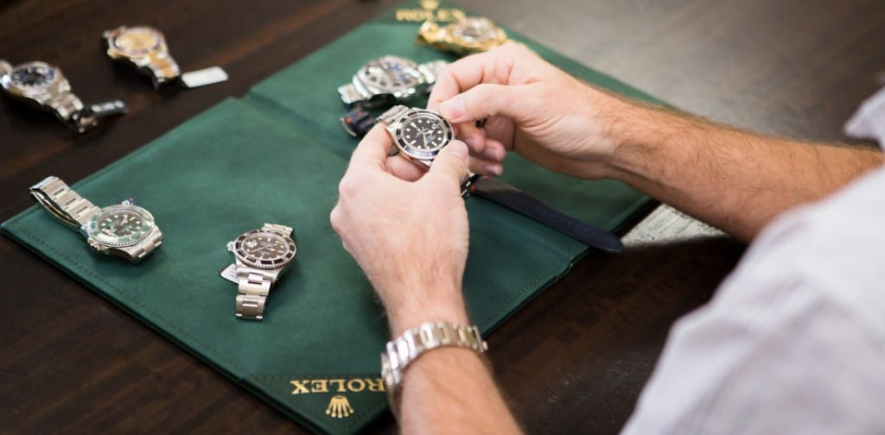

People seem to check their watches on a regular basis, so that they are certain not to miss an important date, meeting, or some other event. While these two examples aren't watches or clocks, they highlight mankind's fascination with the technology that goes into watches and clocks. Big Ben is one of the world's most well-known clocks and Rolex is one of the most universally recognized wrist watch manufacturers in the world, though certainly not the most expensive, Watch collecting for some people is a hobby that presents a number of opportunities, as well as challenges. Knowing watch history, manufacturing, and periods is important to discovering the great find at a tag or garage sale, and ending up with what looked like an ancient watch only to learn that it was just an imitation, a remake from a modern manufacturer. Whether it's a pocket watch from the time of Lincoln to a wrist watch that made it into space, there are gems located around the world just waiting to be discovered. AN OVERVIEW OF WATCH COLLECTING There are a number of groups that gather to discuss watch collecting, to trade secrets, and to simply enjoy the company of other people who share a common interest. Mankind could certainly survive without watches, as it had for thousands of years, but the idea of the watch has made life much simpler, and more complicated at the same time. There are watches that track the constellations in the sky and even watches that will offer the latest headline news across a screen whenever something comes up. Watches have come a long way from the days of pocket watches attached to a chain and kept in the vest pocket of a wealthy man. Is time really all that important? Or is the fascination with time keeping and watches something that has evolved over time, changed with changing times, and ultimately led to the current fascination with it? That answer can only be arrived at by understanding the history of watches. GETTING STARTED: FINDING THE RIGHT SUPPORT When you're ready to begin your watch collecting hobby, one of the first things that you should do is to seek out a group of like-minded individuals who share your passion for watches. Since there is an enormous amount of information to know and understand when it comes to watches, wading through the waters by yourself is not necessarily the best idea. Using the Internet, you can join any number of watch aficionado groups throughout the world, sharing your passion with people whom you might never otherwise have met. If you don't have a passion to learn about watches, then watch collecting is not going to last long for you and in all likelihood, you will end up wasting your time in the long run. Watches have history, as you may have read earlier and as such, they have a lot to teach us about how time is kept, managed, and even structured. The efficiency of a quality watch is something to behold, so make sure that before anything else, you have a passion for watch collecting. Do you understand the most basic difference between analog and digital? Between functional and dress watches? How about some of the most general terms, such as the crown, the dial, bezel, and even movement? If you don't then you will likely stumble into an unnecessary quagmire of questions and while a good support group will be more than happy to help you move through this passion for watch collecting, many will grow wearing of doing the heavy lifting when it comes to learning and research for you. Here is a brief rundown of the most important concepts to watches and watch collecting: Crown The crown is a protrusion from the side of an analog watch that is usually situation in the three o'clock position, and is used to wind the watch and to set the time. Some watches do not have a bezel and instead the individual must decipher the time from the basic hand positions. Analog watches consist of winding mechanisms, balance wheels, and a mainspring and escapement. The more you know learn about watches early on in your watch collecting hobby, the easier time you will have in locating quality watches and starting your collection. While many people will prefer to sell their old watches for cold hard cash, there may be other bartering items that someone may find of interest. Don't jump into watch collecting expecting to find a Rolex at a garage sale or a historically significant pocket watch worn by one of the presidents of the United States. While some of these watches may be expensive, there are also great deals to be found. Experiment If you want to truly invest your time and money and effort into watch collecting, then you can consider purchasing a few cheap watches and dissecting them to see how they work from the inside.